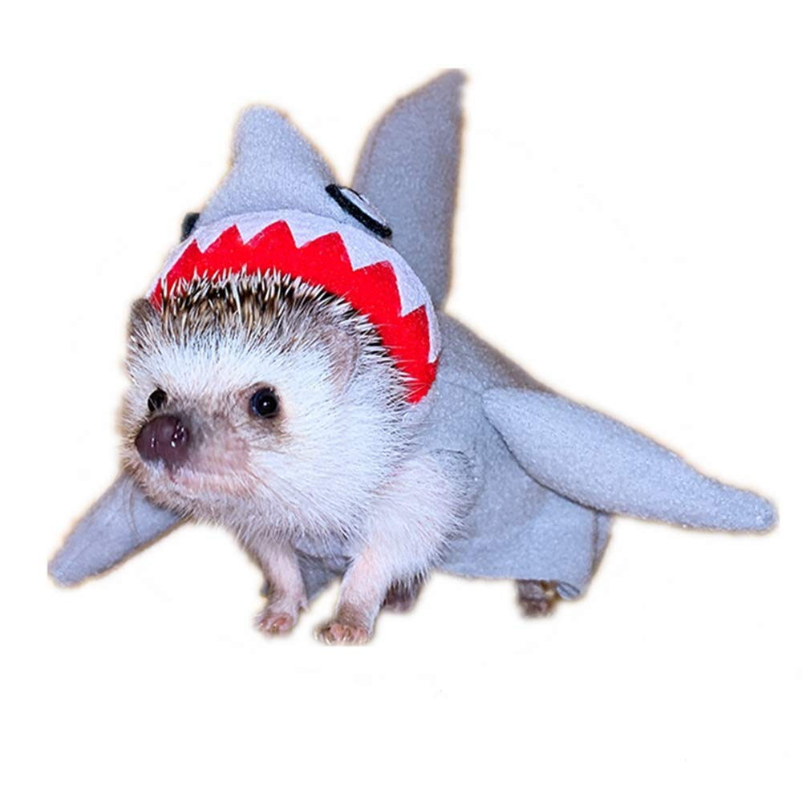
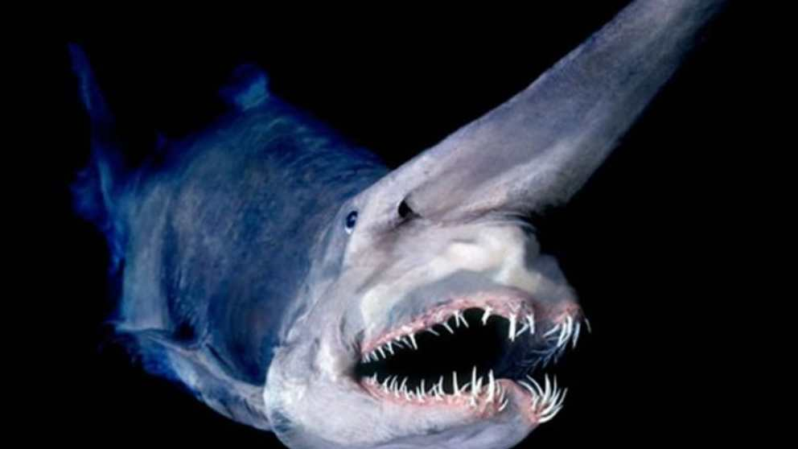

Especies de Tiburones Escualiformes

Tiburón Puercospín
El tiburón puercospín es conocido por su capacidad para inflar su cuerpo cuando se siente amenazado.

Tiburón Fluorescente
Este tiburón habita en aguas profundas y es capaz de emitir una luz verde fluorescente.

Tiburón Duende
El tiburón duende es conocido por su peculiar hocico alargado y su aspecto prehistórico.